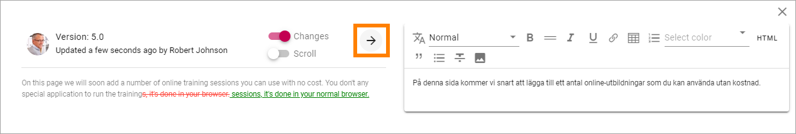
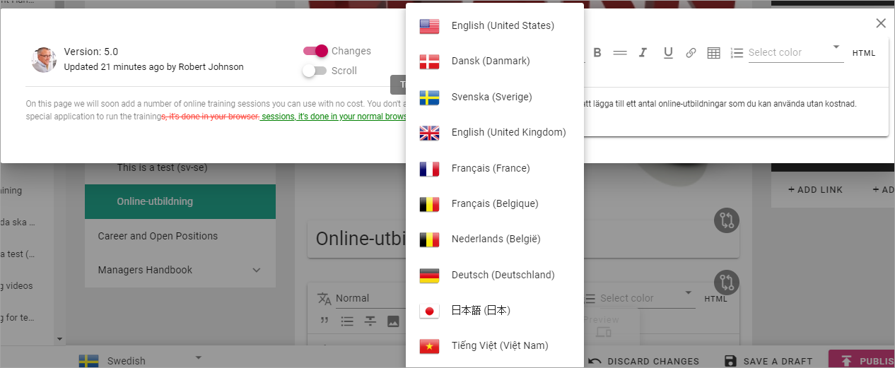
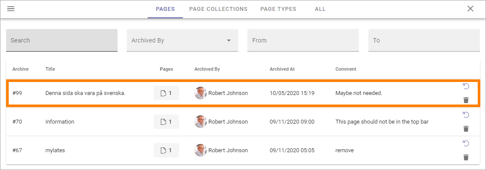

Edit Page Variations¶
For each Varation a specific Variation Author can be set up, see below. If not, all authors of the main page can edit the variations as well.
When a page variation exists for a page, omnia keeps track of changes on the main page. When the main page has been edited, compare icons are displayed to notify the author about where changes has been made, when a varation is being edited.

To edit the variation according to the changes, click the compare icon.
Something like the following is shown:

To the left you can see the text on the main page, to the right the text for the variation you’re editing.
If you would like to see what has been changed, click this icon:

Now you can clearly see what’s been altered, for example:

Note! The comparison is made between the two last versions of the main page. If you haven’t edited the variation for a while there can be more changes and they are not selected here - just the last changes are shown.
You can of course edit the variation manually by typing the text in the right field and just use the information in the left field as a reminder, but as a quick way, machine translation is an integrated part of this functionality. Note! Machine translation is not available in Omnia on-prem.
Click this button to machine translate all text in the left field.
and select to which language you want the translation to be made:
The list displays all languages that has been set up in Omnia Admin.
Note! When you click the “Translate” button, a complete, new translation of the text in the left field is made. If you have done any changes manually in the right field before this, they are overwritten.
If there is a lot of text, a scroll bar is available. Sometimes it can be handy to have separate scroll bars in each field. If you want that, click “Scroll”.

When you’re finished, just close the compare window. You then save, or discard, changes the normal way.
Variation author¶
A Variation author can be added for each variation. That is done in the publishing app settings, see: Publishing App Settings
Note that there can be only one variation author for each variation, regardless on how many pages the variation is used.
The variation author is notified through e-mail when a main page, with a variation of the variation authors type, is updated.
The variation author needs the same permisions as the author of the main page, to be able to edit the variation for a page.
Variations and Reusable Content¶
Variations can be used as Reusable Content, the same way as other pages, see: Reusable Content
Delete variations¶
You can delete a variation even if the main page should not be deleted. (If the main page is deleted, any variations for that page are always deleted as well.)
Open the variation.
Save or Discard changes, ir there are changes that has not been saved yet (or the DELETE button will not be available).
Click DELETE.

Something like the following is shown:

Type a comment and click OK.
A variation can be restored or terminated the same way as pages in the archive.
More information about deleting, restoring and terminating of pages is found here: Delete a page